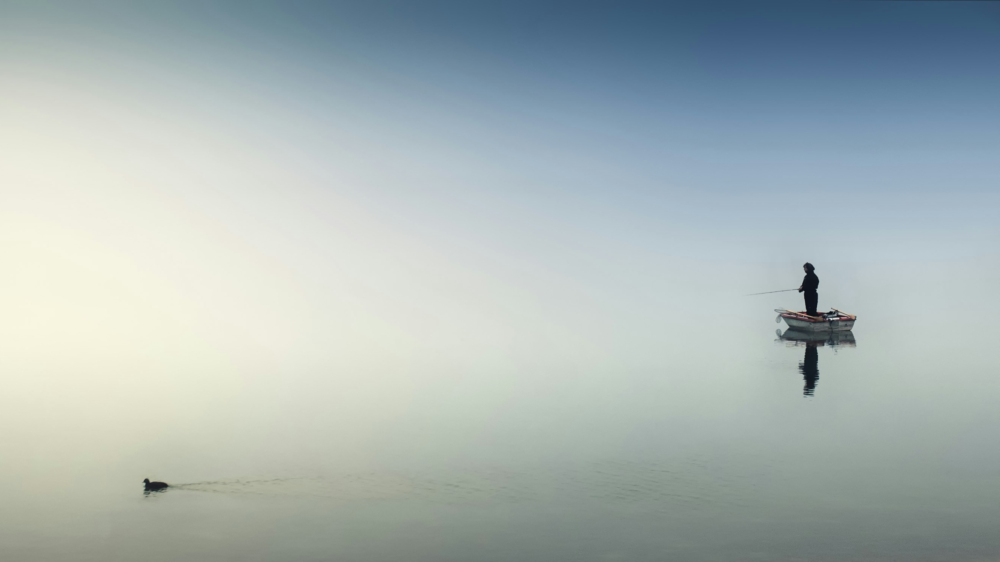

Blend emotional support, real data, and a gamified journey on every trip.
FISHON
Your Fishing Guide Intelligence
Multi-sensor Physicalization
Community
Play

How might we design a tool
for younger anglers
In the digitalized era?
2D Map Interface
- Recommendation engine
- Community-marked fishing spots
- Real-time weather overlays & ideal time suggestions
- Route planning and GPS-based navigation
2.5D Map Interface
- Unlock & track regional fish species
- Check-in system with badges & rewards
- Encouragement system via motivational popups
- Beginner-friendly suggestion cards
4D XR Map Interface
- Visual reconstruction of fish spots via 3D scanning
- AR-based immersive previews
- Fish species terrain recognition with AI guidance
- Species detection & highlight moment replay


2D MapReal-time overlays and navigationA data-driven map that visualizes real fishing spots, weather, and location information for quick decision-making
2.5D MapEmotion & Discovery MapA semi-immersive map blending 3D depth and emotional feedback, exploration through ambient visuals.
4D XR MapImmersive XR previewsAn extended-reality environment that anchors fish and environment in real-world space, merging physical and virtual fishing experiences.
Radical Prototype
Letting users to "see" the dynamic fish habitats and real-time encouragement from an AI multidimensional agent, creating an immersive yet emotionally supportive fishing journey
Fishing Tech
Envisions a future where fishing blends data, emotion, and nature to explore new nature–AI relationships.
Provocative
Balance tech's focus on efficiency and experience with emphasizing mindfulness, emotion, and play.
Narrative-driven
Builds a story between user, environment and community through every fishing journey.
Experience over functional
Focuses on illustrating ideas of journey while blending technical completion.
Speculative
Connects speculative storytelling with design research to reflect on the fishing community.